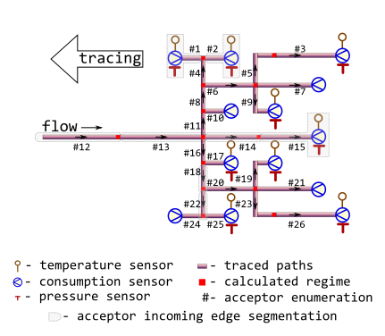

R/m325tracebwm.R
m325tracebwm.RdTrace values of thermal-hydraulic regime (temperature, pressure,
consumption) in the bunched pipeline against the flow direction using norms
of heat flux values prescribed by
Minenergo Order 325.
In contrast to m325tracebw the algorithm suits for
partially measurable district heating network with massive data lack
conditions, when there are no temperature and pressure sensor readings on
the majority of terminal nodes.
m325tracebwm(
sender = 6,
acceptor = 7,
temperature = 70,
pressure = pipenostics::mpa_kgf(6),
consumption = 20,
d = 100,
len = 72.446,
year = 1986,
insulation = 0,
laying = "tunnel",
beta = FALSE,
exp5k = TRUE,
roughness = 0.001,
inlet = 0.5,
outlet = 1,
method = "romeo",
opinion = "median",
verbose = TRUE,
csv = FALSE,
file = "m325tracebw.csv"
)identifier of the node which heat carrier flows out.
Type: any type that can be painlessly coerced to character by
as.character.
identifier of the node which heat carrier flows in. According to topology
of test bench considered this identifier should be unique for every row.
Type: any type that can be painlessly coerced to character by
as.character.
snapshot of thermal-hydraulic regime state: temperature of heat carrier
(water) sensor-measured on the terminal acceptor node, [°C].
Use NA_float_s for (terminal) nodes without temperature sensor.
Type: assert_double.
snapshot of thermal-hydraulic regime state: sensor-measured
absolute pressure
of heat carrier (water) inside the pipe (i.e. acceptor's incoming edge),
[MPa]. Type: assert_double.
snapshot of thermal-hydraulic regime state:
sensor-measured amount of heat carrier (water) on terminal node that is
transferred by pipe (i.e. acceptor's incoming edge) during a period,
[ton/hour]. Type: assert_double.
Use NA_float_s for nodes without consumption sensor.
internal diameter of pipe (i.e.diameter of acceptor's incoming edge),
[mm].
Type: assert_double.
pipe length (i.e. length of acceptor's incoming edge), [m].
Type: assert_double.
year when the pipe (i.e. acceptor's incoming edge) is put in operation
after laying or total overhaul.
Type: assert_integerish.
identifier of insulation that covers the exterior of pipe (i.e. acceptor's incoming edge):
0no insulation
1foamed polyurethane or analogue
2polymer concrete
Type: assert_subset.
type of pipe laying depicting the position of pipe in space. Only five types of pipe laying are considered:
air,
channel,
room,
tunnel,
underground.
Type: assert_subset.
logical indicator: should they consider additional heat losses of fittings
located on this pipe (i.e. acceptor's incoming edge)?
Type: assert_logical.
logical indicator for regime of pipe (i.e. acceptor's incoming edge): if
TRUE pipe is operated more that 5000 hours per year.
Type: assert_logical.
roughness of internal wall of pipe (i.e. acceptor's incoming edge),
[m]. Type: assert_logical.
elevation of pipe inlet, [m]. Type: assert_double.
elevation of pipe outlet, [m]. Type: assert_double.
method of determining Darcy friction factor:
romeo
vatankhan
buzelli
Type: assert_choice.
For more details see dropp.
method for aggregating values of regime parameters on each node for the next tracing step:
meanvalues of parameter are averaged before the next tracing step
medianmedian of parameter values are used for the next tracing step
Type: assert_choice.
logical indicator: should they watch tracing process on console?
Type: assert_flag.
logical indicator: should they incrementally dump results to csv-file
while tracing?
Type: assert_flag.
name of csv-file which they dump results to.
Type: assert_character of length 1 that can be used safely
to create a file and write to it.
data.frame containing results of tracing in
long format
(narrow format)
like it returned by function m325tracebw
They consider the topology of district heating network much similar to
m325testbench:

In contrast to m325tracebw no more than
two nodes must be equipped with pressure and temperature sensors whereas
for other nodes only consumption sensors must be installed. In practice
the most of consumption sensor readings are surrogate because replaced with
calculated values.
For further details of the algorithm see m325tracebw.
Other Regime tracing:
m325tracebw(),
m325tracefw(),
m325traceline()
# Get isomorphic representation of district heating network graph:
nx <- pipenostics::m325testbench
nx$d <- 1e3*nx$d # convert [m] to [mm]
# Simulate lack of temperature and pressure sensors
nx[c(7, 10, 21, 24), c("temperature", "pressure")] <- NA_real_
# Trace thermal-hydraulic regime
output <- do.call("m325tracebwm", c(as.list(nx)))
#>
#> 2023-04-19 17:17:09 m325tracebwm | start backward tracing; segments 26;
#> 2023-04-19 17:17:09 m325tracebwm | start job; job 0;
#> 2023-04-19 17:17:09 m325tracebwm | now process; 13 node(s); [1,10,15,17,19,2,21,24,25,26,3,7,9]
#> 2023-04-19 17:17:09 m325tracebwm | seen tracing; [9/13] are TP-sensored;
#> 2023-04-19 17:17:09 m325tracebwm | tracing temperature;;
#> 2023-04-19 17:17:09 m325tracebwm | OK! Temperature traced from 9 nodes;[1,2,3,9,15,17,19,25,26];
#> 2023-04-19 17:17:09 m325tracebwm | tracing pressure;;
#> 2023-04-19 17:17:09 m325tracebwm | OK! Pressure traced from 9 nodes;[1,2,3,9,15,17,19,25,26];
#> 2023-04-19 17:17:09 m325tracebwm | tracing consumption;;
#> 2023-04-19 17:17:09 m325tracebwm | finish job; job 0; processed node(s) 13
#> 2023-04-19 17:17:09 m325tracebwm | start job; job 1;
#> 2023-04-19 17:17:09 m325tracebwm | now process; 5 node(s); [14,22,23,4,5]
#> 2023-04-19 17:17:09 m325tracebwm | seen tracing; [5/5] are TP-sensored;
#> 2023-04-19 17:17:09 m325tracebwm | tracing temperature;;
#> 2023-04-19 17:17:09 m325tracebwm | OK! Temperature traced from 5 nodes;[4,5,14,22,23];
#> 2023-04-19 17:17:09 m325tracebwm | tracing pressure;;
#> 2023-04-19 17:17:09 m325tracebwm | OK! Pressure traced from 5 nodes;[4,5,14,22,23];
#> 2023-04-19 17:17:09 m325tracebwm | tracing consumption;;
#> 2023-04-19 17:17:09 m325tracebwm | finish job; job 1; processed node(s) 5
#> 2023-04-19 17:17:09 m325tracebwm | start job; job 2;
#> 2023-04-19 17:17:09 m325tracebwm | now process; 2 node(s); [20,6]
#> 2023-04-19 17:17:09 m325tracebwm | seen tracing; [2/2] are TP-sensored;
#> 2023-04-19 17:17:09 m325tracebwm | tracing temperature;;
#> 2023-04-19 17:17:09 m325tracebwm | OK! Temperature traced from 2 nodes;[6,20];
#> 2023-04-19 17:17:09 m325tracebwm | tracing pressure;;
#> 2023-04-19 17:17:09 m325tracebwm | OK! Pressure traced from 2 nodes;[6,20];
#> 2023-04-19 17:17:09 m325tracebwm | tracing consumption;;
#> 2023-04-19 17:17:09 m325tracebwm | finish job; job 2; processed node(s) 2
#> 2023-04-19 17:17:09 m325tracebwm | start job; job 3;
#> 2023-04-19 17:17:09 m325tracebwm | now process; 2 node(s); [18,8]
#> 2023-04-19 17:17:09 m325tracebwm | seen tracing; [2/2] are TP-sensored;
#> 2023-04-19 17:17:09 m325tracebwm | tracing temperature;;
#> 2023-04-19 17:17:09 m325tracebwm | OK! Temperature traced from 2 nodes;[8,18];
#> 2023-04-19 17:17:09 m325tracebwm | tracing pressure;;
#> 2023-04-19 17:17:09 m325tracebwm | OK! Pressure traced from 2 nodes;[8,18];
#> 2023-04-19 17:17:09 m325tracebwm | tracing consumption;;
#> 2023-04-19 17:17:09 m325tracebwm | finish job; job 3; processed node(s) 2
#> 2023-04-19 17:17:09 m325tracebwm | start job; job 4;
#> 2023-04-19 17:17:09 m325tracebwm | now process; 2 node(s); [11,16]
#> 2023-04-19 17:17:09 m325tracebwm | seen tracing; [2/2] are TP-sensored;
#> 2023-04-19 17:17:09 m325tracebwm | tracing temperature;;
#> 2023-04-19 17:17:09 m325tracebwm | OK! Temperature traced from 2 nodes;[11,16];
#> 2023-04-19 17:17:09 m325tracebwm | tracing pressure;;
#> 2023-04-19 17:17:09 m325tracebwm | OK! Pressure traced from 2 nodes;[11,16];
#> 2023-04-19 17:17:09 m325tracebwm | tracing consumption;;
#> 2023-04-19 17:17:09 m325tracebwm | finish job; job 4; processed node(s) 2
#> 2023-04-19 17:17:09 m325tracebwm | start job; job 5;
#> 2023-04-19 17:17:09 m325tracebwm | now process; 1 node(s); [13]
#> 2023-04-19 17:17:09 m325tracebwm | seen tracing; [1/1] are TP-sensored;
#> 2023-04-19 17:17:09 m325tracebwm | tracing temperature;;
#> 2023-04-19 17:17:09 m325tracebwm | OK! Temperature traced from 1 nodes;[13];
#> 2023-04-19 17:17:09 m325tracebwm | tracing pressure;;
#> 2023-04-19 17:17:09 m325tracebwm | OK! Pressure traced from 1 nodes;[13];
#> 2023-04-19 17:17:09 m325tracebwm | tracing consumption;;
#> 2023-04-19 17:17:09 m325tracebwm | finish job; job 5; processed node(s) 1
#> 2023-04-19 17:17:09 m325tracebwm | start job; job 6;
#> 2023-04-19 17:17:09 m325tracebwm | now process; 1 node(s); [12]
#> 2023-04-19 17:17:09 m325tracebwm | seen tracing; [1/1] are TP-sensored;
#> 2023-04-19 17:17:09 m325tracebwm | tracing temperature;;
#> 2023-04-19 17:17:09 m325tracebwm | OK! Temperature traced from 1 nodes;[12];
#> 2023-04-19 17:17:09 m325tracebwm | tracing pressure;;
#> 2023-04-19 17:17:09 m325tracebwm | OK! Pressure traced from 1 nodes;[12];
#> 2023-04-19 17:17:09 m325tracebwm | tracing consumption;;
#> 2023-04-19 17:17:09 m325tracebwm | finish job; job 6; processed node(s) 1
#> 2023-04-19 17:17:09 m325tracebwm | finish backward tracing;;
print(output)
#> node tracing backward aggregation temperature pressure
#> 1 1 sensor TRUE identity 69.30000000 5.883990e-01
#> 2 2 sensor TRUE identity 69.40000000 5.883990e-01
#> 3 3 sensor TRUE identity 68.60000000 5.883990e-01
#> 7 7 sensor TRUE identity NA NA
#> 9 9 sensor TRUE identity 69.20000000 5.883990e-01
#> 10 10 sensor TRUE identity NA NA
#> 15 15 sensor TRUE identity 70.00000000 5.883990e-01
#> 17 17 sensor TRUE identity 71.40000000 5.883990e-01
#> 19 19 sensor TRUE identity 69.30000000 5.883990e-01
#> 21 21 sensor TRUE identity NA NA
#> 24 24 sensor TRUE identity NA NA
#> 25 25 sensor TRUE identity 69.30000000 5.883990e-01
#> 26 26 sensor TRUE identity 68.50000000 5.883990e-01
#> span.1 1 sensor TRUE span 0.00000000 0.000000e+00
#> span.10 10 sensor TRUE span NA NA
#> span.15 15 sensor TRUE span 0.00000000 0.000000e+00
#> span.17 17 sensor TRUE span 0.00000000 0.000000e+00
#> span.19 19 sensor TRUE span 0.00000000 0.000000e+00
#> span.2 2 sensor TRUE span 0.00000000 0.000000e+00
#> span.21 21 sensor TRUE span NA NA
#> span.24 24 sensor TRUE span NA NA
#> span.25 25 sensor TRUE span 0.00000000 0.000000e+00
#> span.26 26 sensor TRUE span 0.00000000 0.000000e+00
#> span.3 3 sensor TRUE span 0.00000000 0.000000e+00
#> span.7 7 sensor TRUE span NA NA
#> span.9 9 sensor TRUE span 0.00000000 0.000000e+00
#> median.1 1 sensor TRUE median 69.30000000 5.883990e-01
#> median.10 10 sensor TRUE median NA NA
#> median.15 15 sensor TRUE median 70.00000000 5.883990e-01
#> median.17 17 sensor TRUE median 71.40000000 5.883990e-01
#> median.19 19 sensor TRUE median 69.30000000 5.883990e-01
#> median.2 2 sensor TRUE median 69.40000000 5.883990e-01
#> median.21 21 sensor TRUE median NA NA
#> median.24 24 sensor TRUE median NA NA
#> median.25 25 sensor TRUE median 69.30000000 5.883990e-01
#> median.26 26 sensor TRUE median 68.50000000 5.883990e-01
#> median.3 3 sensor TRUE median 68.60000000 5.883990e-01
#> median.7 7 sensor TRUE median NA NA
#> median.9 9 sensor TRUE median 69.20000000 5.883990e-01
#> mean.1 1 sensor TRUE mean 69.30000000 5.883990e-01
#> mean.10 10 sensor TRUE mean NA NA
#> mean.15 15 sensor TRUE mean 70.00000000 5.883990e-01
#> mean.17 17 sensor TRUE mean 71.40000000 5.883990e-01
#> mean.19 19 sensor TRUE mean 69.30000000 5.883990e-01
#> mean.2 2 sensor TRUE mean 69.40000000 5.883990e-01
#> mean.21 21 sensor TRUE mean NA NA
#> mean.24 24 sensor TRUE mean NA NA
#> mean.25 25 sensor TRUE mean 69.30000000 5.883990e-01
#> mean.26 26 sensor TRUE mean 68.50000000 5.883990e-01
#> mean.3 3 sensor TRUE mean 68.60000000 5.883990e-01
#> mean.7 7 sensor TRUE mean NA NA
#> mean.9 9 sensor TRUE mean 69.20000000 5.883990e-01
#> 14 4 1 TRUE identity 69.42782396 5.895532e-01
#> 22 4 2 TRUE identity 69.52789112 5.895532e-01
#> 31 5 3 TRUE identity 68.94094679 6.031489e-01
#> 4 6 7 TRUE identity NA NA
#> 5 6 9 TRUE identity 69.25285830 5.941420e-01
#> 6 11 10 TRUE identity NA NA
#> 71 14 15 TRUE identity 70.25610481 5.907037e-01
#> 8 16 17 TRUE identity 71.45462914 6.055378e-01
#> 91 20 19 TRUE identity 69.39149422 5.983225e-01
#> 101 20 21 TRUE identity NA NA
#> 11 22 24 TRUE identity NA NA
#> 12 22 25 TRUE identity 69.38166041 5.891363e-01
#> 13 23 26 TRUE identity 68.84073921 6.031483e-01
#> span.14 14 15 TRUE span 0.00000000 0.000000e+00
#> span.22 22 24|25 TRUE span 0.00000000 0.000000e+00
#> span.23 23 26 TRUE span 0.00000000 0.000000e+00
#> span.4 4 1|2 TRUE span 0.10006716 5.248280e-08
#> span.5 5 3 TRUE span 0.00000000 0.000000e+00
#> median.14 14 15 TRUE median 70.25610481 5.907037e-01
#> median.22 22 24|25 TRUE median 69.38166041 5.891363e-01
#> median.23 23 26 TRUE median 68.84073921 6.031483e-01
#> median.4 4 1|2 TRUE median 69.47785754 5.895532e-01
#> median.5 5 3 TRUE median 68.94094679 6.031489e-01
#> mean.14 14 15 TRUE mean 70.25610481 5.907037e-01
#> mean.22 22 24|25 TRUE mean 69.38166041 5.891363e-01
#> mean.23 23 26 TRUE mean 68.84073921 6.031483e-01
#> mean.4 4 1|2 TRUE mean 69.47785754 5.895532e-01
#> mean.5 5 3 TRUE mean 68.94094679 6.031489e-01
#> 16 8 4 TRUE identity 69.50546725 5.899445e-01
#> 23 6 5 TRUE identity 69.10085892 6.119730e-01
#> 32 13 14 TRUE identity 70.47637808 5.926835e-01
#> 41 18 22 TRUE identity 69.44121822 5.899809e-01
#> 51 20 23 TRUE identity 69.07038683 6.178683e-01
#> span.20 20 19|21|23 TRUE span 0.32110739 1.954581e-02
#> span.6 6 7|9|5 TRUE span 0.15199938 1.783100e-02
#> median.20 20 19|21|23 TRUE median 69.23094052 6.080954e-01
#> median.6 6 7|9|5 TRUE median 69.17685861 6.030575e-01
#> mean.20 20 19|21|23 TRUE mean 69.23094052 6.080954e-01
#> mean.6 6 7|9|5 TRUE mean 69.17685861 6.030575e-01
#> 18 8 6 TRUE identity 69.28872816 6.111791e-01
#> 27 18 20 TRUE identity 69.35445917 6.138828e-01
#> span.18 18 22|20 TRUE span 0.08675905 2.390186e-02
#> span.8 8 4|6 TRUE span 0.21673909 2.123458e-02
#> median.18 18 22|20 TRUE median 69.39783870 6.019318e-01
#> median.8 8 4|6 TRUE median 69.39709771 6.005618e-01
#> mean.18 18 22|20 TRUE mean 69.39783870 6.019318e-01
#> mean.8 8 4|6 TRUE mean 69.39709771 6.005618e-01
#> 110 11 8 TRUE identity 69.42816779 6.034192e-01
#> 28 16 18 TRUE identity 69.42974784 6.048664e-01
#> span.11 11 10|8 TRUE span 0.00000000 0.000000e+00
#> span.16 16 17|18 TRUE span 2.02488130 6.714490e-04
#> median.11 11 10|8 TRUE median 69.42816779 6.034192e-01
#> median.16 16 17|18 TRUE median 70.44218849 6.052021e-01
#> mean.11 11 10|8 TRUE mean 69.42816779 6.034192e-01
#> mean.16 16 17|18 TRUE mean 70.44218849 6.052021e-01
#> 111 13 11 TRUE identity 69.45669626 6.068087e-01
#> 29 13 16 TRUE identity 70.47088211 6.085935e-01
#> span 13 14|11|16 TRUE span 1.01968183 1.591000e-02
#> median 13 14|11|16 TRUE median 70.47088211 6.068087e-01
#> mean 13 14|11|16 TRUE mean 70.13465215 6.026953e-01
#> 112 12 13 TRUE identity 70.52609184 6.142191e-01
#> span1 12 13 TRUE span 0.00000000 0.000000e+00
#> median1 12 13 TRUE median 70.52609184 6.142191e-01
#> mean1 12 13 TRUE mean 70.52609184 6.142191e-01
#> consumption job
#> 1 30 0
#> 2 30 0
#> 3 16 0
#> 7 20 0
#> 9 16 0
#> 10 10 0
#> 15 30 0
#> 17 10 0
#> 19 16 0
#> 21 20 0
#> 24 30 0
#> 25 30 0
#> 26 16 0
#> span.1 30 0
#> span.10 10 0
#> span.15 30 0
#> span.17 10 0
#> span.19 16 0
#> span.2 30 0
#> span.21 20 0
#> span.24 30 0
#> span.25 30 0
#> span.26 16 0
#> span.3 16 0
#> span.7 20 0
#> span.9 16 0
#> median.1 30 0
#> median.10 10 0
#> median.15 30 0
#> median.17 10 0
#> median.19 16 0
#> median.2 30 0
#> median.21 20 0
#> median.24 30 0
#> median.25 30 0
#> median.26 16 0
#> median.3 16 0
#> median.7 20 0
#> median.9 16 0
#> mean.1 30 0
#> mean.10 10 0
#> mean.15 30 0
#> mean.17 10 0
#> mean.19 16 0
#> mean.2 30 0
#> mean.21 20 0
#> mean.24 30 0
#> mean.25 30 0
#> mean.26 16 0
#> mean.3 16 0
#> mean.7 20 0
#> mean.9 16 0
#> 14 30 1
#> 22 30 1
#> 31 16 1
#> 4 20 1
#> 5 16 1
#> 6 10 1
#> 71 30 1
#> 8 10 1
#> 91 16 1
#> 101 20 1
#> 11 30 1
#> 12 30 1
#> 13 16 1
#> span.14 30 1
#> span.22 60 1
#> span.23 16 1
#> span.4 60 1
#> span.5 16 1
#> median.14 30 1
#> median.22 60 1
#> median.23 16 1
#> median.4 60 1
#> median.5 16 1
#> mean.14 30 1
#> mean.22 60 1
#> mean.23 16 1
#> mean.4 60 1
#> mean.5 16 1
#> 16 60 2
#> 23 16 2
#> 32 30 2
#> 41 60 2
#> 51 16 2
#> span.20 52 2
#> span.6 52 2
#> median.20 52 2
#> median.6 52 2
#> mean.20 52 2
#> mean.6 52 2
#> 18 52 3
#> 27 52 3
#> span.18 112 3
#> span.8 112 3
#> median.18 112 3
#> median.8 112 3
#> mean.18 112 3
#> mean.8 112 3
#> 110 112 4
#> 28 112 4
#> span.11 122 4
#> span.16 122 4
#> median.11 122 4
#> median.16 122 4
#> mean.11 122 4
#> mean.16 122 4
#> 111 122 5
#> 29 122 5
#> span 274 5
#> median 274 5
#> mean 274 5
#> 112 274 6
#> span1 274 6
#> median1 274 6
#> mean1 274 6